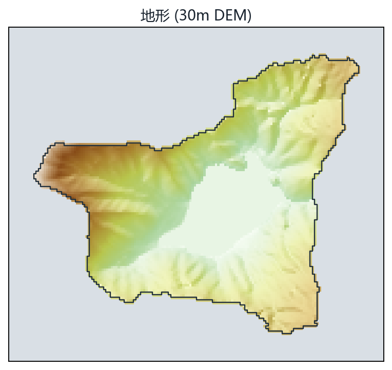
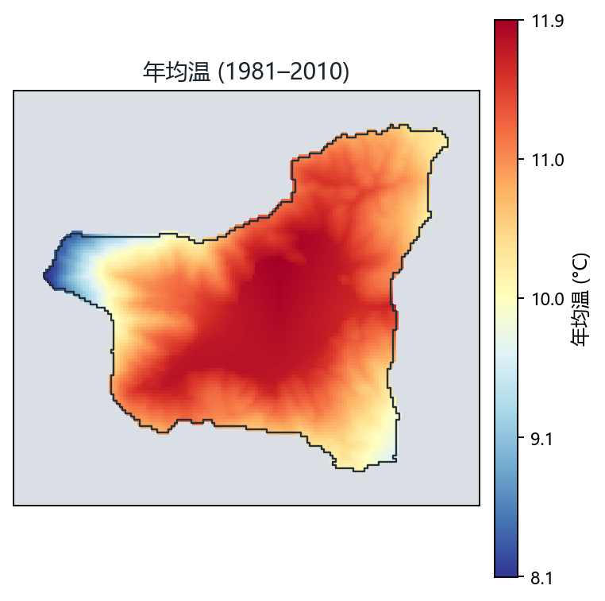
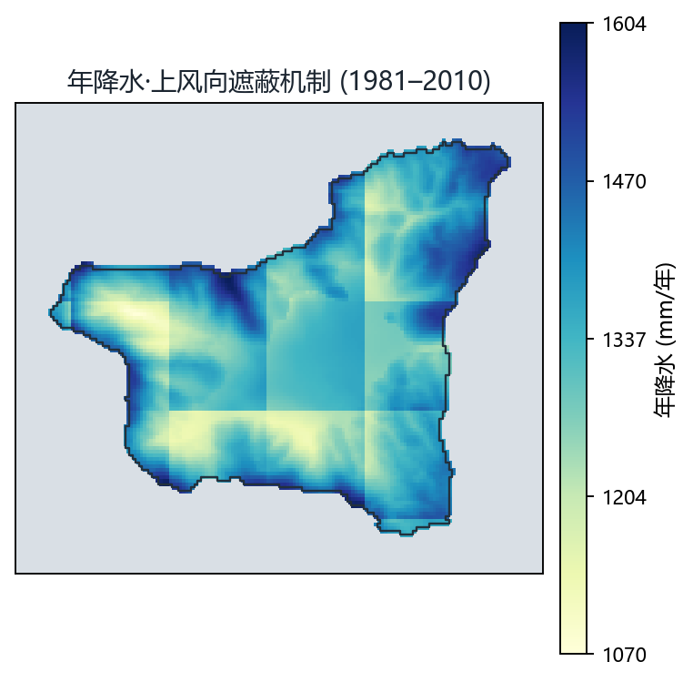
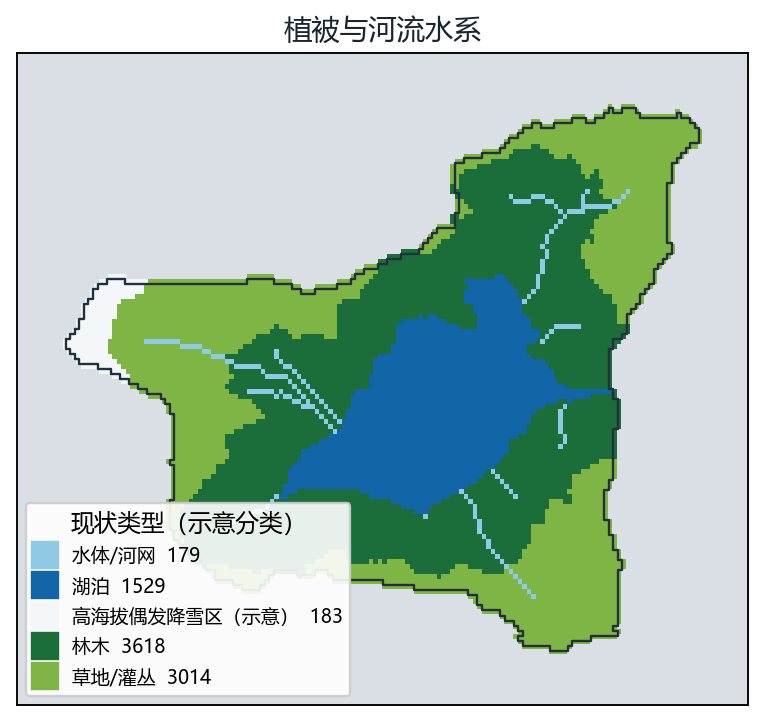

CHELSA 观测 1981–2019 · CMIP6 五模式集合预估至 2090 · 湖泊收支示意 · 可导出 PNG




灰线 = CHELSA 观测单年 · 实线 = 五模式中位数（20 年窗口） · 阴影 = 模式间范围 · 右轴虚线 = 湖泊水量净收支（示意） · 点击图表跳转年份
观测基准：CHELSA v2.1 月值气候态（1981–2010，1 km），气温经 30m 地形细化（局部高程递减率 γΔz + 坡向辐射修正，阳坡暖/阴坡冷），降水经上风向遮蔽机制细化（迎风坡湿/背风坡干，风场取 1981–2010 ERA5 逐月盛行风）。现状四图即该机制细化口径。
模式集合：CMIP6 Amon 逐月数据，MPI-ESM1-2-HR、MRI-ESM2-0、EC-Earth3、CanESM5 与 NorESM2-LM（r1i1p1f1 成员，全 2015–2100 时段覆盖），重网格至 1 km 后经逐月经验分位映射（EQM）偏差校正，取五模式中位数与模式间范围。
趋势保持口径：未来窗口气候态 = CHELSA 观测气候态 + GCM 窗口变化信号（与结果图册 restore 环节完全一致），避免降尺度模型外推的均值衰减。
滑动窗口：滑块年 Y 对应 [Y−9, Y+10] 的 20 年平均，如 2050 → 2041–2060（与主结果的分析窗口对齐）。
历史观测段（1981–2019）：滑块 2020 年以前显示 CHELSA 逐月数据的单年观测场（含真实年际变率），变化量相对 1981–2010 观测气候态；2020 年起切换为 20 年窗口集合预估（平滑气候态）。两段口径不同，播放时的"变亮/变稳"是口径切换而非气候突变。
模式间分歧图层：逐格点五模式变化信号的最大值−最小值（仅未来窗口），表达"模式对变化的意见分歧"，不是观测误差；湖盆一带分歧小、分水岭一带大，与论文 §5.2 的多模式必要性论证对应。
湖泊水量净收支（示意级粗估，未实测校准）：以 Oudin (2005) 温度法估算湖面潜在蒸发，净收入 = 湖面降水 + 径流系数 0.55 × 流域降水 × 面积比（6.98/1.38 km²） − 蒸发；图中数值为相对 1981–2010 基准的距平（mm/年 → 水位当量 m/年）。未纳入地下水、实测蒸发与水位验证，只表达"未来更湿/更干"的方向性示意，不构成水位预报。
已知限制：五个模式仍只是 CMIP6 的小样本，区间宽度存在抽样不确定性；年降水集合场年际变差偏小，逐月极端指标请以图册日值口径为准；空间分布图为逐格点中位数场，其流域年降水均值与模式年信号中位数存在口径差异（详见论文 §4.4）。
边界数据：流域由 30m GLO-30 DEM 填洼–D8 汇流自动划定（约 7.0 km²），湖盆取流域内最大洼地；地图与图层均裁剪至流域边界内，流域外不显示。